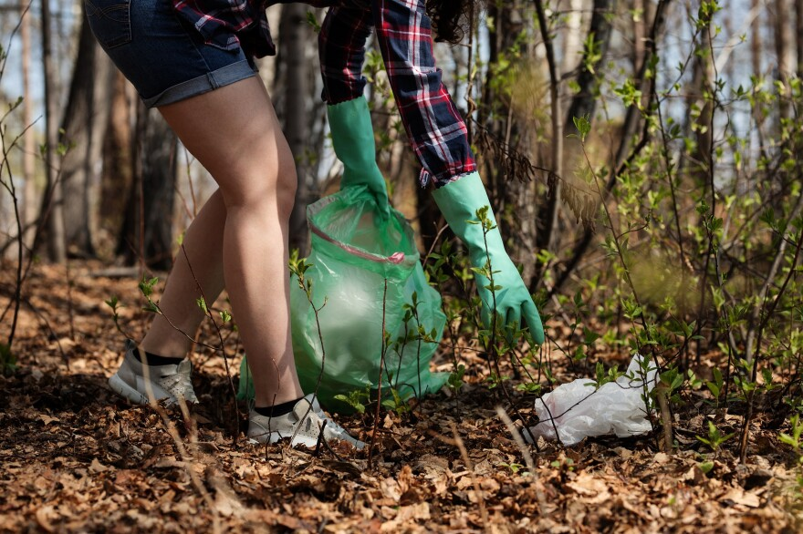

Städa Sverige - Idrottens miljöorganisation
Vi jobbar tillsammans med lokala föreningsungdomar för ett skräpfritt Sverige. Mest välkänd är vår kampanj med de gula säckarna längs Sveriges vägar, men vi arbetar också med andra projekt som stad & kommun, kust, natur & älv och vatten.
Under 2023 fyllde 26.119 deltagare 21.707 gula säckar med skräp från svensk natur. Det gav närmare 8,8 miljoner kronor till svensk ungdomsidrott. Läs mer om vad vi gör, här nedan!